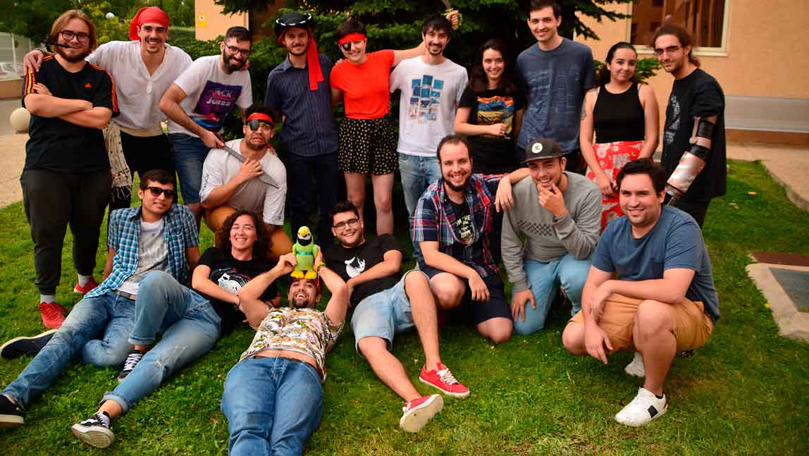

The Team
Lost Criteria is a group of 18 people with different disciplines: Design, Art and Programming together for a cause, taking on the challenge of creating an ambitious and good quality product. Being the first group to create an online multiplayer game in the history of the U-tad Master.
